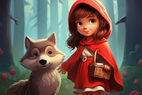

Little Red Riding Hood
Once upon a time, in a small village, there lived a sweet little girl who was loved by everyone. Her grandmother adored her so much that she made her a red riding hood, which the girl wore all the time. People in the village started calling her Little Red Riding Hood. One day, her mother asked her to visit her grandmother, who lived in the woods, and bring her some food and wine because she was feeling ill.
"Remember to stay on the path and don't talk to strangers," her mother warned her. Little Red Riding Hood promised to be careful and set off through the forest. Along the way, she encountered a sly wolf who was eager to find out where she was going. "Good morning, Little Red Riding Hood," said the wolf. "Where are you headed this fine day?"
Not suspecting any danger, Little Red Riding Hood replied, "I'm going to visit my grandmother who lives in the woods. She's not feeling well, and I'm bringing her some food and wine." The wolf, seeing an opportunity, thought to himself, "What a tender young creature! What a nice plump mouthful—she will be better to eat than the old woman. I must act craftily so as to catch both."
"Why don't you take some flowers to your grandmother?" suggested the wolf. "There are some beautiful ones just off the path." Little Red Riding Hood saw no harm in this and wandered off the path to pick some flowers. Meanwhile, the wolf ran straight to the grandmother's house. He knocked on the door and imitated Little Red Riding Hood's voice, "It's me, grandmother, Little Red Riding Hood. I've brought you some food and wine."
The grandmother, who was resting in bed, called out, "Lift the latch and come in, dear." The wolf entered, pounced on the grandmother, and gobbled her up in no time. Then he put on her clothes, including her nightcap, and lay down in her bed, drawing the curtains around him. When Little Red Riding Hood finally arrived with a bouquet of flowers, she noticed that the door was ajar.
She walked in and went straight to the bed, pulling back the curtains. "Grandmother, what big ears you have!" she exclaimed. "All the better to hear you with, my child," replied the wolf. "Grandmother, what big eyes you have!" she continued. "All the better to see you with, my dear," said the wolf. "Grandmother, what big hands you have!" "All the better to hug you with," said the wolf.
And then Little Red Riding Hood said, "But Grandmother, what a terrible big mouth you have!" "All the better to eat you with!" roared the wolf as he leaped out of bed and gobbled up Little Red Riding Hood in one big gulp. The wolf, having satisfied his hunger, lay down again in the bed and fell asleep, snoring loudly. A huntsman who was passing by heard the loud snores and thought it strange for the old woman to snore so loudly.
He decided to take a look and saw the wolf lying in the bed. "So here you are, you old sinner," he said. "I've been looking for you for a long time." He raised his gun to shoot but then thought that the old woman might still be alive inside the wolf. So he took a pair of scissors and started cutting open the sleeping wolf's belly. After a few snips, he saw a red hood and soon Little Red Riding Hood emerged, followed by her grandmother.
Both were shaken but unharmed. Little Red Riding Hood fetched some heavy stones, and they filled the wolf's belly with them. When he woke up, he tried to run away, but the stones were so heavy that he collapsed and died. The huntsman, Little Red Riding Hood, and her grandmother were all relieved. The huntsman took the wolf's pelt as a trophy, the grandmother ate the food and felt much better, and Little Red Riding Hood promised never to stray from the path again.